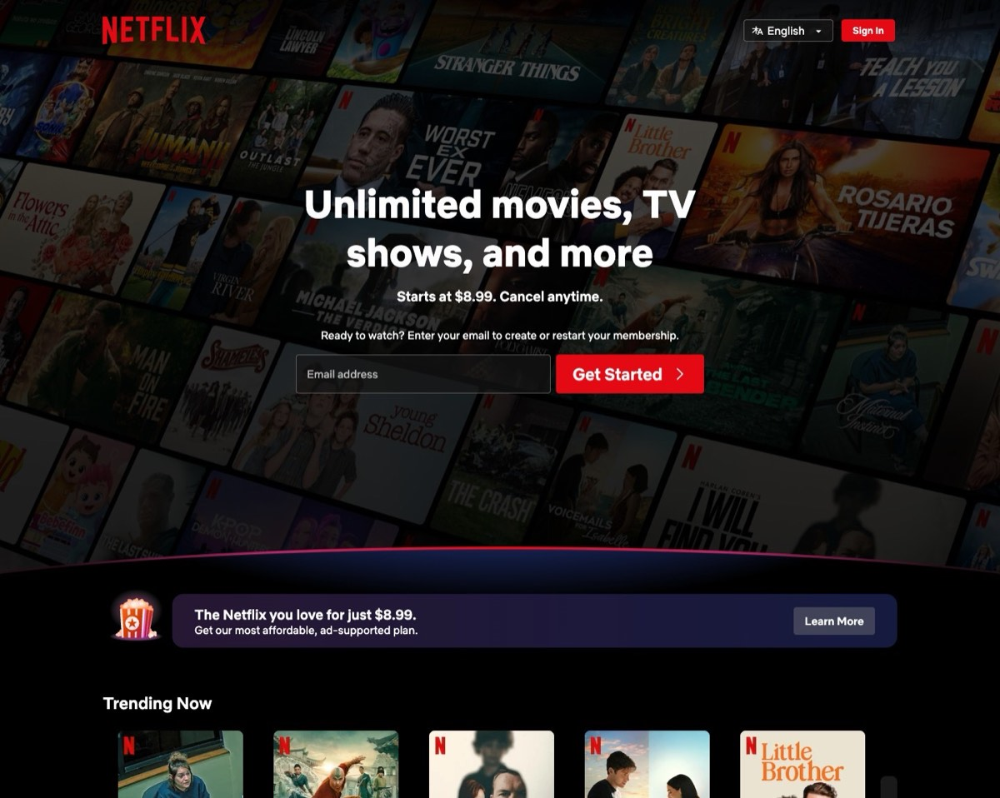

Off until you say so, on each device.
Sharing is a per-device switch in Settings, off by default. A machine’s tabs never leave it until you flip the switch on that machine — and flipping it off withdraws them.
pick up anywhere
Turn on sharing and each machine publishes what it has open. Browse another device’s tabs from the Island, the Quick Switcher, or the start page — and open one locally with a click.

a menu, not a mirror
Sharing is a per-device switch in Settings, off by default. A machine’s tabs never leave it until you flip the switch on that machine — and flipping it off withdraws them.
Another device’s tabs are a read-only list. Picking one opens it as a fresh local tab; nothing force-opens, closes, or reorders on the other side.
Remote tabs sit behind a folded section in the Island panel, match in the Quick Switcher below your local tabs, and appear on the start page under “on your other devices.”
continue where you were